| 日付 | 2008年9月27日（土） - 2008年10月5日（日） |
|---|---|
| メンバー | 単独 |
6日目
早朝7時、宿を出てアトーチャ駅に向かう。
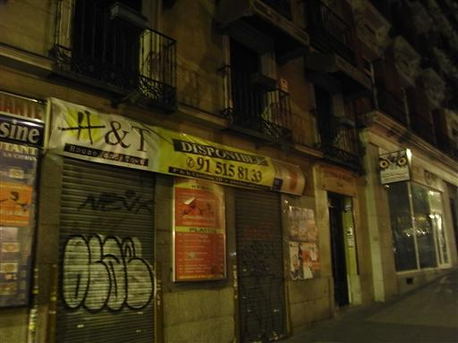
最も行きたかったトレドとセゴビアを訪れた後、残り2日で行ける町は1つだろう。
北上してバルセロナのサグラダ・ファミリアを見に行くか、
南下してグラナダのアルハンブラ宮殿を見に行くか…
どちらにも行くのは無理なので、今回はグラナダに行くことにし、列車に乗って南下する。
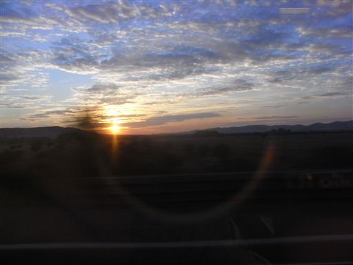
車窓からはどこまでも広がる畑が見える。
きれいに並んで植えられている木は、何の木なのだろう？
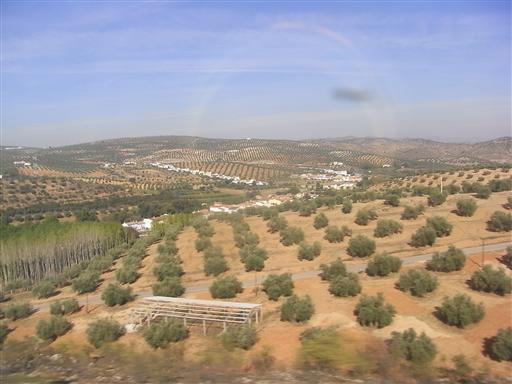
登りたくなるようなかっこいい山が見えている。
登山対象になっているのかどうかは分からないが、はげ山が多い。
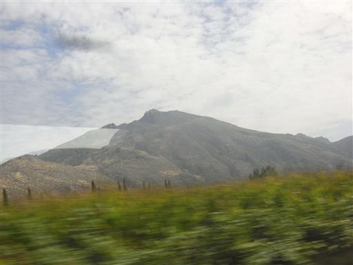
4時間半でグラナダ駅に到着。
グラナダには高速列車が通じていないためずいぶん時間がかかってしまった。
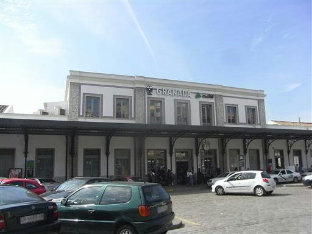
バスでグラナダの中心部に移動。
グラナダは人口20万を越えるなかなかの都会だ。
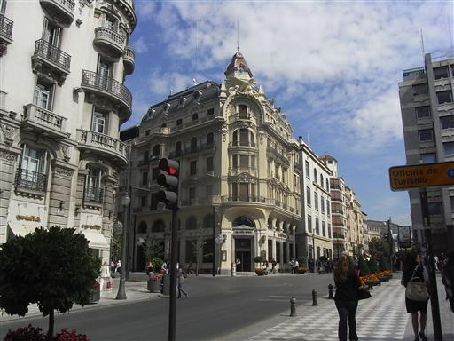
本日の宿を確保する。2階より上が宿になっている。
外観はきれいだが内装は普通。
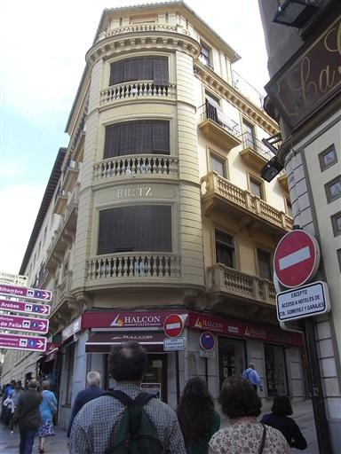
アルハンブラ宮殿は入場制限があるらしいので、
明日の入場券を買うために、まずは宮殿に行ってみる。
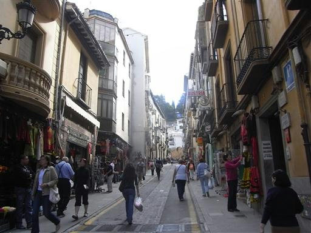
高台に建っている宮殿に向かって、歩きやすい道を登っていく。
道の両側には音を立てながら水が流れている。
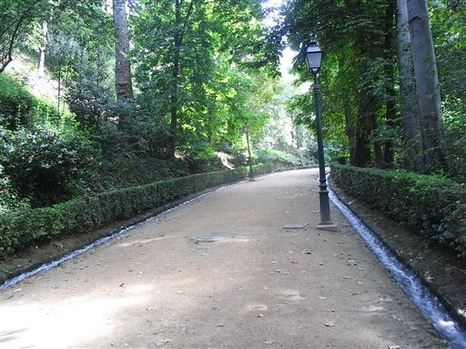
宮殿の入口に到着。大勢の人が並んでいる。
チケット窓口に問い合わせると、明日のチケットは当日8時から売るので明日の8時に来いとのこと。
この国で8時といえばなかなかの早朝だ。

バスのオープンカーが停まっている。なかなかかっこいい。
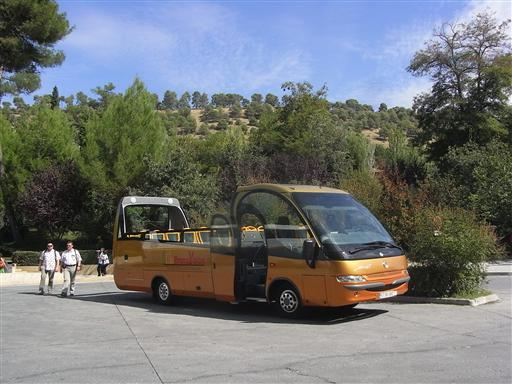
少し付近を歩いてみると、展望が開けてグラナダ市街が見えてくる。
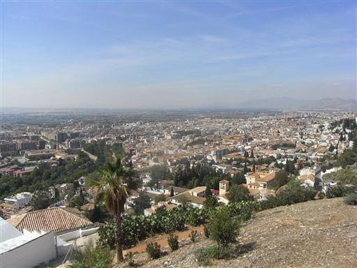
チノス坂を下って市街地に戻る。
奥に見えているのはアルバイシン地区の家々。
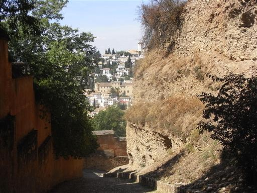
ここはスペインの中でもかなり南部に位置しているので、日差しは非常に強い。
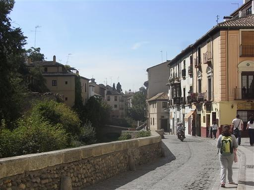
適当なレストランで昼食を取る。
スペインでは多くのレストランで、4点セットの調味料が出てくる。
この調味料セットはタイとよく似ている。
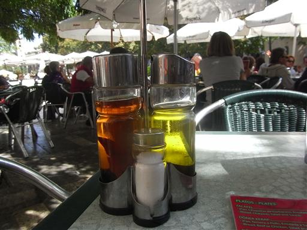
明日のアルハンブラ宮殿のチケット情報を入手するために、日本語情報センターに寄ってみる。
グラナダ在住でフラメンコ好きのおっさんが運営している。
チケットはこの季節なら当日の8時に行けば問題ないとのこと。
ついでに夕食の情報を聞いてみると、レオンというバルで
何か（豚だったか猿だったか…）の金玉料理と脳みそ料理が食べられるとか。
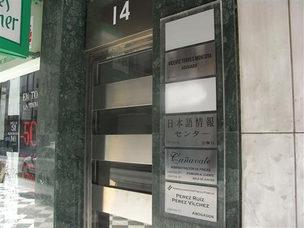
今日の残った時間でグラナダ市街の観光をすることにする。
まずはグラナダのカテドラルに行ってみる。
周囲に建物がひしめいているので、全体像がよく分からない。
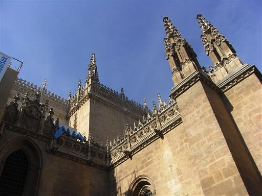
このカテドラルは珍しく内部撮影が許可されている。
細かな違いはあるが、全体の構造はどのカテドラルへ行っても大して変わらない。
高い天井に、ステンドグラス、衝立、キリスト像や聖母マリア像などなど。
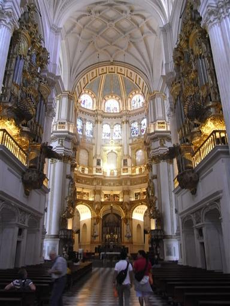
美しく装飾されたパイプオルガン。半ば建物と融合している。
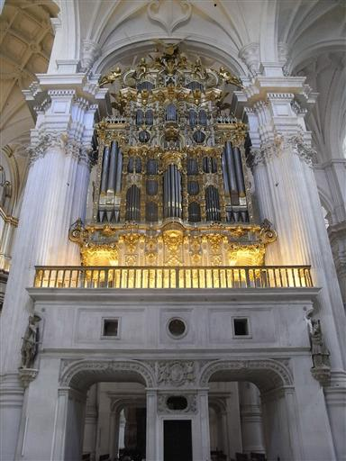
カテドラルと融合する形で、王室礼拝堂が建てられている。
こちらの方が建てられたのは古い。
内部にはイサベル女王とその夫の棺が安置されている。
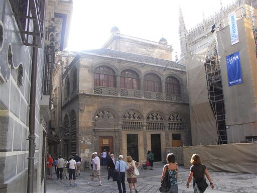
人形かと思ったら、人間。ピクリとも動かない。
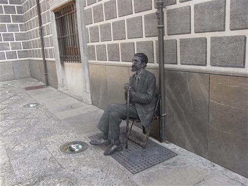
白壁が連なるアルバイシン地区へ行ってみる。
ここはグラナダでも最も古い地区で、アラブ人の居住地だった。
イスラムの城塞都市として設計されているので、
路地は狭くて迷路のように入り組み、一瞬にして方向感覚を失わせる。
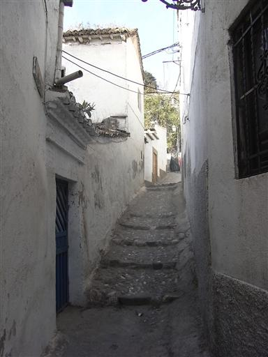
この地区は治安が悪く、強盗被害が多いらしいので、バス路線を忠実にたどって行く。
そこまでするならバスに乗って行ってもよかったのだが…
狭い路地でも強引にバスが走ってくる。
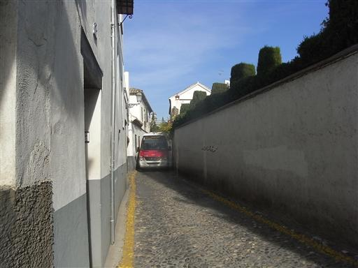
地図と睨めっこしながら歩いて、サン・ニコラス展望台に到着する。
多くの観光客が腰掛けている。
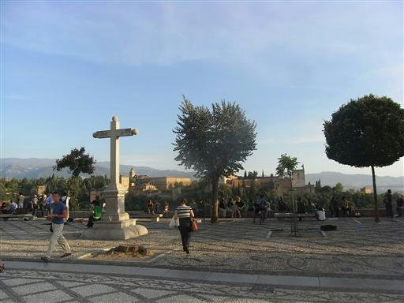
この広場は美しいアルハンブラ宮殿が真正面に見える絶好の展望台だ。
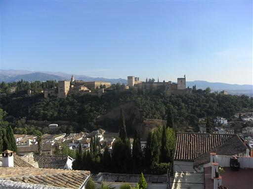
展望台から裏側の路地を歩いてみる。
この周辺は比較的人通りも多くて安心だ。
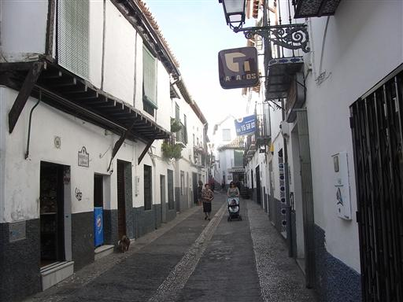
先ほどの広場よりもう少し高台にあるサン・クリストバル展望台。
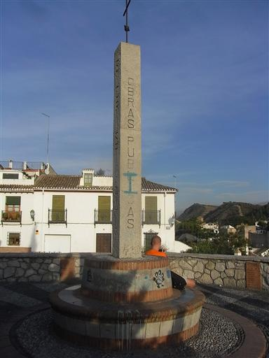
ここからは、アルバイシンの古い城壁と、グラナダ市街が一望できる。
一通り展望を眺めたら、サン・ニコラス展望台に戻る。
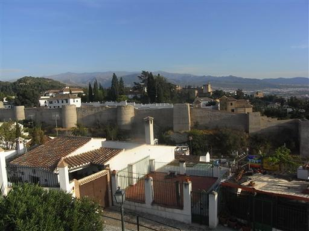
日が暮れてきて、アルハンブラが赤く輝いている。
この宮殿はそれほど外観が美しいわけではないのだが、なぜか見とれてしまう。
背後に見えるのはシエラネバダ山脈で、3000m峰が連なる。
ヨセミテ国立公園で有名なアメリカのシエラネバダ山脈は、
この山脈と似ていることから名付けられたそうだ。
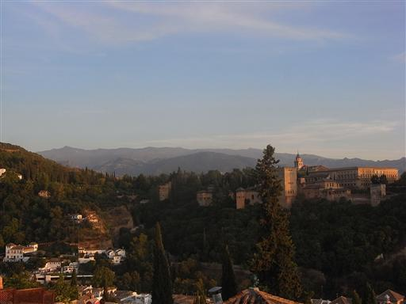
グラナダ市街の向こう側に夕日が落ちる。
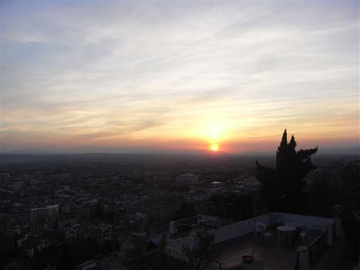
辺りが暗くなると、アルハンブラはライトアップされて浮かび上がる。
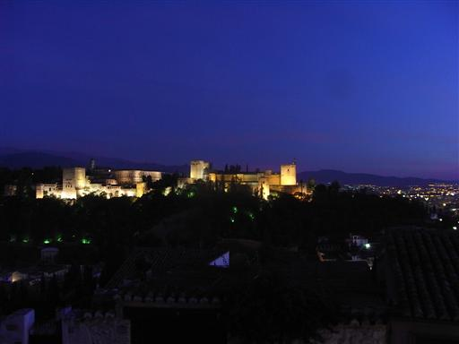
グラナダ市街の夜景。
この展望台は暗くなっても多くの人が騒ぎ、歌い、非常ににぎやかだ。

日本語情報センターで聞いたレオンというバルに行ってみる。
バルはスペイン中のあちこちにあり、ちょっと一杯飲んだり、
食事を取ったり、簡単な買い物をしたりと色々と利用できる。
レストランと一緒になっているところも多い。
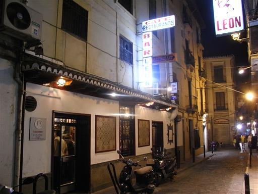
バルの内部。ずらりと酒が並び、常連さんが多そうだ。
カウンターは基本的に立ち席だが、同じものを注文してもテーブル席より安いことが多い。
金玉料理を注文してみた。軟骨のから揚げという感じ。
フライにしてしまったら何を食べても大して味は変わらない。
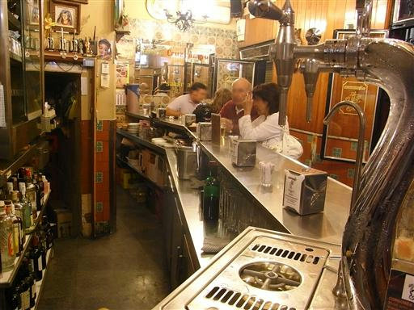
大きな音が聞こえるので外に出てみると、花火が上がっていた。
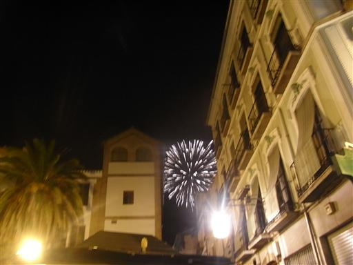